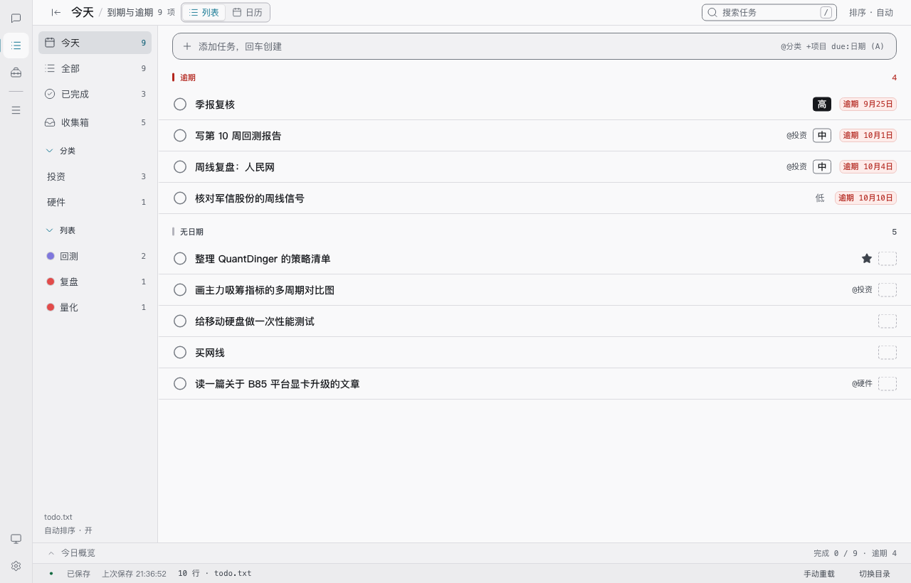
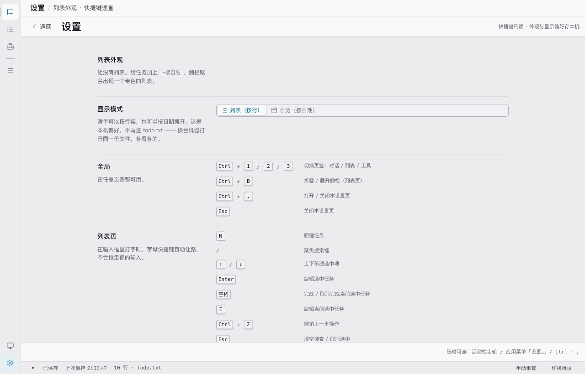
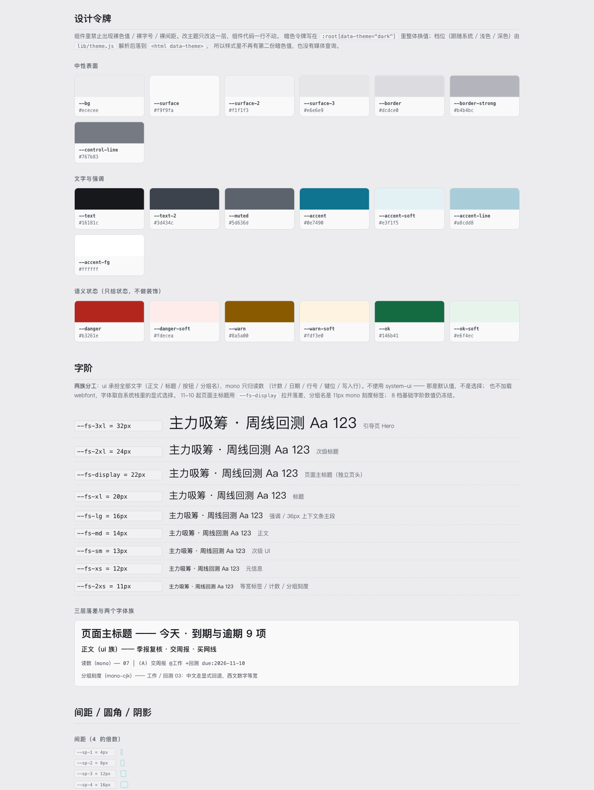
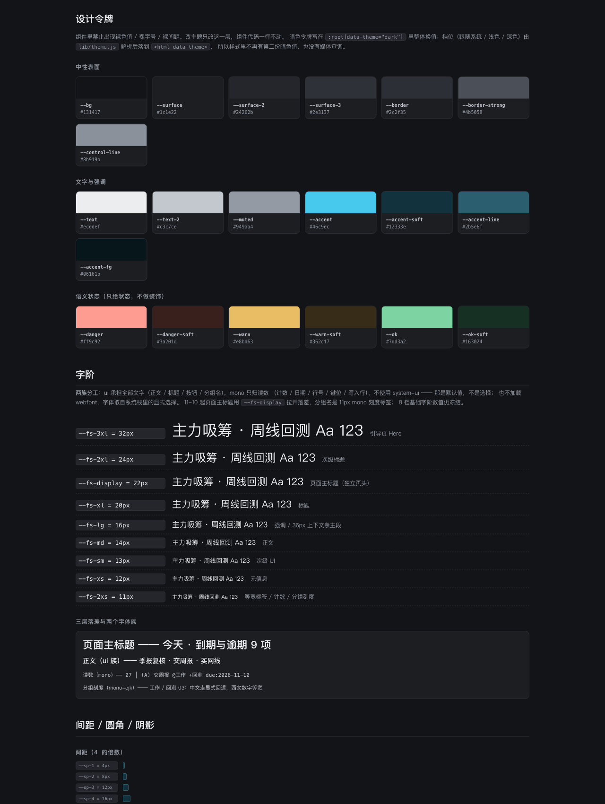

Worktodolist · UI / 2026-11-10 · 方案 + 实施记录
字体排版优化方案
用户反馈「字体设计感不足」。诊断结论：主要不是字体不好看，而是层级落差不够、口径三处打架、比例字与等宽字混排。本文保留完整的诊断与三方向对比，并记录按裁决 A + B 组合 落地后的实际改动、偏差、门禁结果与界面截图（07 / 08 节）。
- 状态
- 已实施 · 全套门禁全绿
- 裁决
- A + B 组合 · 分组名 11px mono
- 用例
- 39 文件 / 726 条
- 排版门禁
- 19 条（新增）
01 / 诊断
「设计感不足」具体来自哪几处
以下全部是可核对的代码事实，不是观感推测。行号指向当前工作树。
| 问题 | 事实 | 位置 |
|---|---|---|
| 三族令牌是空壳 | --font-display / --font-body 都等于 --font-ui；前者在产品 CSS 里 0 引用，后者仅 1 处。但文件头说「display 指向 mono」、样式指南说「宋体展示字」—— 注释、指南、代码三套口径互相矛盾。 | index.css:9, 135-142；styleguide.jsx:659, 671-679 |
| 字阶挤在底部 | 192 处 font-size 里 11px(75) + 12px(64) + 13px(28) = 167 处 ≈ 87%；≥16px 仅 14 处。常规页面最大标题 16px，20px 以上只出现在引导页 / 工具墙 / 指标值。 | index.css:92-100（字阶）；分布见 §4 表 |
| 层级只靠字重和颜色 | 任务行标题 14px/500 与正文 14px/400 同字号同族；设置页分组标题 14px/600 与正文同字号；侧栏组名 12px 反而小于条目 13px（注释自称「组名 600 > 条目 400」，代码是 500 vs 400）。 | index.css:1874-1883, 1400-1424, 3829-3834, 1397-1399 |
| 装饰清空但替代没建起来 | text-transform 0、italic 0、font-feature-settings 0、letter-spacing 仅 4 处。且清得不彻底：font-weight: 600 仍有 26 处（约 10 处是标题）；日历月标题还同时留着 mono + 600 + 0.02em。 | index.css:2240-2249, 3099, 3166 |
| 系统性混族 | 组合选择器 462-470 只给 tabular-nums 不给字族，使状态栏、工具耗时、分组名成为「比例字 + 仅数字等宽」；同一 28px 状态栏里 ui 的 .statusbar 与 mono 的 .statusbar-lines 混排；同一任务行里 ui 标题 + mono 日期混排。 | index.css:462-470, 1176, 1203, 1215, 1605-1622 |
| 画布脱离治理 | RTI 图表的字体族读令牌，但字号硬编码 11 / 12 / 15px，并用 bold 而非 400/500/600；改 --fs-* 时刻度不跟随，qa-css-check 只扫 CSS 覆盖不到。 | lib/rti/chart.js:85-86, 126, 168, 262, 295, 900 |
| 样式指南不是基准 | TokensDoc 把 --fs-xl 写成 19px（实际 20px，且是硬编码文案不读令牌），并宣称「宋体 / 三套字体」—— 按文档去调字体的人会先撞上不一致。 | styleguide.jsx:612-621, 657-680 |
| 门禁最薄的一层 | 字族、字阶值、字重全仓无断言，仅两条例外：优先级徽章 600/500/400（qa-settings.mjs:358-360）与小屏 --fs-2xl = 21px（qa-responsive.mjs:514）。既缺一致口径，又最容易被反复改乱。 | scripts/qa-*.mjs |
11-06 日志已经把「13px 88 次、11px 84 次、层级只靠字重」标成「排版系统冻结，要动得单开一轮」；11-07 全量重做明确「令牌值一个没动」，把这个问题原样留了下来。现在就是那一轮。
02 / 方向
三个可裁决方向
现状 · 页头 13 / 任务 13 / 读数 11
今天 · 到期与逾期 9 项
季报复核逾期 9月25日
07 │ (A) 交周报 @工作 +回测 due:2026-11-10
A · 字阶重排（推荐）— 页头 22 / 任务 14 / 读数 11
今天 · 到期与逾期 9 项
季报复核逾期 9月25日
07 │ (A) 交周报 @工作 +回测 due:2026-11-10
B · 双族边界 — 字号不变，读数严格成列
今天 · 到期与逾期 9 项
季报复核逾期 09-25
07 │ (A) 交周报 @工作 +回测 due:2026-11-10
C · 本地字体包 / 系统衬线展示族 — 真正换字形
今天 · 到期与逾期 9 项
季报复核逾期 9月25日
07 │ (A) 交周报 @工作 +回测 due:2026-11-10
| 方向 | 做什么 | 改动面 | 风险 / 代价 | 门禁影响 |
|---|---|---|---|---|
| A 字阶重排 推荐 | 新增页面标题档，拉开「标题 / 正文 / 读数」三级落差；修 12px 组名 < 13px 条目的倒挂；收敛 26 处 600；清理 mono+600+0.02em 残留；用行高建立节奏。不换字体族、不加装饰。 | 令牌层 + 约 30 处选择器用法 + canvas + 样式指南 + 新门禁脚本 | 中。字号变大可能挤窄屏与 44px 命中区，须全档回归。零依赖、跨平台一致，且正好兑现 11-06 说的「单开一轮」。 | 不动 --fs-2xl@small = 21px、不动 .prio-badge 字重，两条硬断言不受影响 |
| B 双族边界 | 删掉 --font-display / --font-body 空壳；所有计数 / 日期 / 耗时 / 行号严格 mono + tabular；正文与标题全 ui；状态栏、任务行、工具表格不再混族；body 统一 tabular-nums。 | 约 20 处选择器 + canvas + 样式指南 | 低。视觉变化最内敛，「设计感」提升有限；更像一致性整理而非风格升级。适合作为 A 的附带收尾。 | 几乎为零 |
| C 换字形 | 两条路：① 显式指定系统衬线展示族（Georgia / Songti SC / SimSun）；② 打包一份 OFL 开源中文字体到 Tauri 资源，用本地 @font-face 加载，换取跨平台字形一致。 | 字体栈 / 资源打包 / Tauri 配置 / 体积 | 高。① 宋体在 Windows 小字号 hinting 差、与「仪器面板」气质冲突，且属于 11-06 被否的装饰性手法；② 违背文件头「完全离线，字体取自系统栈里的显式选择」，需先裁决是否放宽，并评估中文子集体积（约 1–3 MB）与 OFL 授权附带义务。 | 门禁不拦（字族无断言），只能靠明暗截图人工验收 |
明确不建议：把
--font-display 改回 mono 给标题用、给标题加 uppercase / 宽字距 / 斜体、用字重重新编码优先级 —— 这些是 11-06 被整轮作废的同一批手法（MEMORY.md:93, 101）。也不建议只改列表页：11-06 正因「只改列表页」被判成 polish 而推翻。03 / 推荐
A 方案的分层实施清单
裁决结果：A + B 组合（字阶重排 + 双族边界），分组名采用 11px mono 刻度标签。以下按改动层列出，全部落在既有令牌体系内。
第 1 层 · 令牌（index.css §1，令牌层内裸值豁免）
新增 --fs-display: 22px /* 页面标题专用，不动既有 8 档 */
新增 --lh-display: 1.25 /* 或复用 --lh-tight */
新增 --fw-body / --fw-emph / --fw-title: 400 / 500 / 600 /* 字重语义化 */
保留 --fs-2xl = 24px、@media(max-width:480) = 21px /* qa-responsive 硬断言 */
删除 --font-display / --font-body 两个空壳（或保留别名并改注释为「= ui」）
统一 body { font-variant-numeric: tabular-nums; }
刻意不改现有 8 档字阶的数值：它们是「冻结：排版系统非调性」，动数值会波及 192 处用法与 38 档响应式；新增一档比整体重标定更可控。
第 2 层 · 用法（层级落差）
- 列表 / 日历 / 设置 / 对话 / 工具的页面标题统一
--fs-display+--fw-title+--lh-display；面包屑保持 13px，形成「页标题 ≫ 面包屑」的落差。 - 修倒挂（已裁决）：侧栏 / 列表分组名降为
--fs-2xs(11px) +--font-mono的「刻度标签」，与新增 22px 页面标题形成强落差。两条必须一起做的对策：① 字色用--text-2、字重 500，不许用--muted+ 11px —— 11-07 已验证这个组合会让中文几乎看不见；② 现有--font-mono栈（Cascadia Mono / Consolas / SF Mono / DejaVu Sans Mono / monospace）不含中文字体，中文标签会回退到系统黑体、并不真的等宽。实施时要么新增--font-mono-cjk令牌补中文回退，要么只让编号 / 计数走 mono、中文标签保持 ui —— 具体取哪一种在落地时用明暗截图定，但必须在qa-typography里断言「分组名不使用--muted」。 - 收敛 26 处 600：只保留页面标题、弹窗标题、强调数字；正文里的 600 降为 500。四档优先级徽章的 600/500/400 一个都不动（
qa-settings.mjs:358-360锁死）。 - 清残留：
.cal-month(2240-2249) 的 mono + 600 + 0.02em、.cmd-hint-title(3099) /.snapshot-head(3166) 的 0.06em，统一进新标题系统。不引入新的字距 / uppercase / 斜体。 - 日历月标题、设置页标题、抽屉标题的现有 16px 用法按新规则归位，避免同一层级两种尺寸。
第 3 层 · 数字与字族边界（B 的收尾）
index.css:462-470的组合选择器拆成两类：明确是读数的补font-family: var(--font-mono)；明确是文字的保持 ui 并继承 body 的 tabular-nums。- 状态栏（1176 / 1203 / 1215）、任务行（1605-1622）、工具表格（4777 / 4797）里同一行的字族统一；不再出现「同一 28px 条里两种字宽体系」。
lib/rti/chart.js的 11 / 12 / 15px 改从token('--fs-*')读；bold换成--fw-emph / --fw-title。canvas 必须一起改，否则令牌改了画布不跟随。
第 4 层 · 样式指南与口径
styleguide.jsx:612-621的字阶表改成从令牌读值（不再硬编码 px），修--fs-xl 19px → 20px。657-680删掉「宋体 / 三套字体」的说法，改成真实的「一族正文 + 一族读数」；把「宋体展示字」样张换成新页面标题档。- 新增「页面标题 / 正文 / 读数」三档对照区，作为以后截图回归的基准。
styleguide.html外壳的 uppercase / 0.08em 是开发外壳、不进产品，可保留但标注清楚。 - 清掉
index.css:9, 135-137里「display 指向 mono」的旧注释，让注释、令牌、指南三处口径一致。
第 5 层 · 补门禁（这一层目前最薄）
新增 scripts/qa-typography.mjs，并入 npm run test:ui： · --font-ui / --font-mono / --font-display / --font-body 的值与引用数（空壳令牌不许存在） · --fs-display / --fs-* 8 档 / --fw-* 语义令牌存在且明暗一致 · 页面标题 computed font-size === 22px、body 有 tabular-nums · font-weight: 600 只出现在白名单选择器（源码静态扫描） · text-transform / font-style:italic / letter-spacing 仍为 0（防止装饰手法回流） · chart.js 不残留硬编码 px 字号（读令牌） 同步 styleguide 的 #sg-metrics 探针，让浏览器门禁能读到新令牌。
04 / 验证
改完要跑的东西
| 门禁 | 为什么必须 |
|---|---|
npm test / test:guard | 当前 39 文件 / 726 用例；新增排版纯函数若有的话要补渲染测试 |
test:ui | css-check（令牌层外不许裸 px 字号）+ 110 组对比度 + 新 qa-typography + Hook 规则 |
test:settings 29 条 | 字重 600/500/400 断言、1280 / 390 无横向溢出、四档徽章形状 |
test:responsive 38 档 539 项 | 最关键：字号变大最容易挤爆窄屏与 44px 触屏命中区；--fs-2xl@small = 21px 是硬断言 |
test:tools 74 / test:nl 44 / build | 工具表格与引导页是字号 ≥16px 最集中的地方，必须回归 |
| 明暗 × 列表 / 日历 / 设置 / 对话 / 引导 截图 | 字体层没有自动断言的地方，靠真实浏览器截图人工验收；test:settings:shots 可复用 |
macOS 上跑浏览器门禁仍需 EDGE=/tmp/unslop/chrome-qa SG_BASE=http://localhost:15181 并去掉代理变量（MEMORY.md 既有约定）。
05 / 红线
明确不做
- 不联网、不引入 CDN webfont、不用
system-ui——文件头index.css:28-29。C 方案若要打包本地字体，必须先由你裁决是否放宽「字体取自系统栈」这条。 - 不把字体偏好写进 todo.txt；纯文本是唯一数据源，外观只进 CSS 令牌 / configStore。
- 不动优先级四档字阶徽章的形状、字重与中性墨（11-10 刚定稿，
qa-settings.mjs锁死）。 - 不动
--control-line（WCAG 1.4.11 契约）、不动设置页六节分组顺序、不动 8 档字阶数值与小屏 21px 覆盖。 - 不重蹈 11-06：不把 mono 扩权到标题、不加 uppercase / 宽字距 / 斜体、不只改列表页。
06 / 裁决
裁决与两处落地的处理
| 裁决项 | 结果 |
|---|---|
| 方向 | A + B 组合：字阶重排为主体，双族边界与数字对齐作同一轮收尾；不引入 webfont、不改 8 档字阶数值。 |
| 分组名层级 | 11px mono 刻度标签（用户选了更安静、更「登记簿」的一档，而非推荐的可读性优先档）。 |
| 字体来源 | 不放宽 —— C 方案不采用，仍遵守「字体取自系统栈的显式选择」。 |
两个小点实际怎么定的
- 中文 mono 回退：采用新增
--font-mono-cjk令牌（西文数字保持等宽、中文显式回退到 PingFang SC / Microsoft YaHei UI），而不是把中文标签退回 ui。中文在 mono 栈里本就不会真等宽，这一族至少保证字形稳定、基线不乱跳。 - 11px 可读性兜底：分组名固定
--text-2+ 字重 500；qa-typography静态断言规则块里不许出现--muted，qa-settings读 computed 断言 11px / 500 / mono 栈含中文回退。明暗截图确认清晰，未退到 12px。
方向已于当日实施，完整改动与验证见 07 节。
07 / 实施
实际改了什么
| 层 | 文件 | 改动 |
|---|---|---|
| 令牌 | src/index.css §1 | 新增 --fs-display: 22px、--fw-body/emph/title = 400/500/600、--font-mono-cjk；删掉 --font-display / --font-body 两个空壳；body 统一 tabular-nums；清掉文件头与字体段里「display 指向 mono」的旧注释。8 档基础字阶数值一个没动。 |
| 层级 | index.css | 独立页头（设置 / 工具墙 / 对话空态）统一 22px / 600 / 紧行高；36px 上下文条主段提到 16px；侧栏与列表分组名降为 11px mono 刻度标签（--text-2 + 500）；日历月标题清掉 mono + 0.02em；.cmd-hint-title / .snapshot-head 的 0.06em 清掉；600 从 26 处收敛到 15 处白名单（页头 / 弹窗标题 / 状态强调 / 读数 / 四档徽章），其余降 500。 |
| 字族 | index.css | 拆分旧的 462-470 组合选择器：读数（计数 / 日期 / 工具耗时 / 顶栏完成数）补 --font-mono，纯文字容器只继承 body 的 tabular-nums，不再出现「比例字 + 仅数字等宽」的半吊子状态。 |
| 画布 | lib/rti/chart.js | fnt() 改从 palette() 取字号与字重，硬编码 11 / 12 / 15px 改读 --fs-2xs / --fs-xs / --fs-md，'bold' 换成 --fw-title；FALLBACK 同步补令牌。改字阶时图表刻度现在会跟着变。 |
| 样式指南 | styleguide.jsx / styleguide.html | 字阶表改成从令牌读值（修掉硬编码 19px），加 display 档；删「宋体 / 三套字体」的旧说法，改成真实的「两族 + 三层落差」陈列；外壳 h2 的 --font-display 换成 --font-ui，h3 的 uppercase / 宽字距标注为开发外壳专用。 |
| 门禁 | scripts/qa-typography.mjs（新增） | 19 条静态断言并入 test:ui：字体令牌值与引用数、空壳别名已删、8 档冻结、--fs-display、分组名不用 --muted、装饰手法不回流、600 白名单、chart.js 无硬编码 px / bold、样式指南不写死 19px。另在 qa-settings.mjs 补 4 条浏览器 computed 断言（22px 页头 / 16px 面包屑 / 11px mono 分组名 / body tabular-nums）。 |
与方案的三处偏差（如实记录）
- 22px 没进常规页头：样张写的是「页头 22 / 正文 14 / 读数 11」，实际落地为「独立页头 22 / 36px 上下文条主段 16 / 正文 14 / 读数 11」。原因：
.topbar固定--ctxbar-h: 36px，22px 会把它撑破并牵动 38 档响应式；列表 / 日历 / 对话页没有独立页头元素，硬塞要改 JSX 布局。落差仍然拉开了（13 → 16px），且设置 / 工具 / 空态是真的 22px。 - canvas 的 15px 变成 14px：字阶里没有 15px 这一档，就近归到
--fs-md(14px)；不为此新增第十档。 - 600 是收敛不是清零：保留 15 处有明确语义的（含四档徽章高档，
qa-settings硬断言不许动），把 12 处小标签 / 选中态 / 内联强调降到 500。
验证结果
| 门禁 | 结果 |
|---|---|
npm test / test:guard | 39 文件 / 726 用例，39/39 全部跑到 |
test:ui | css-check 裸值 0 · 110 组对比度全过 · typography 19/19 · Hook 42 文件 |
test:settings | 33/33（原 29 + 新增 4 条排版断言） |
test:tools / test:nl | 74/74 · 44/44 + 174 词表 |
test:responsive | 38 档 / 539 项，失败 0（字号变大后窄屏与 44px 命中区未被挤坏） |
npm run build | 333.62 kB JS，构建通过 |
门禁负向验证：临时把
另外过程中发现
--fs-display 改成 20px，qa-typography 确实 exit 1 并精确报出该项；恢复后 19/19 全绿。不是永远绿的摆设。另外过程中发现
letter-spacing: 0（重置声明）会被负向前瞻正则因回溯误判成「非零字距」，已改成逐条取值的判断方式。08 / 界面
实施后的真实界面
由 npm run test:settings:shots 生成，已抹掉样式指南外壳。




状态：本次改动连同 11-10 优先级四档、日历补齐、11-07 UI 重做全部仍在工作树里，未提交、未发版；CHANGELOG 最新仍是 v1.3.0。